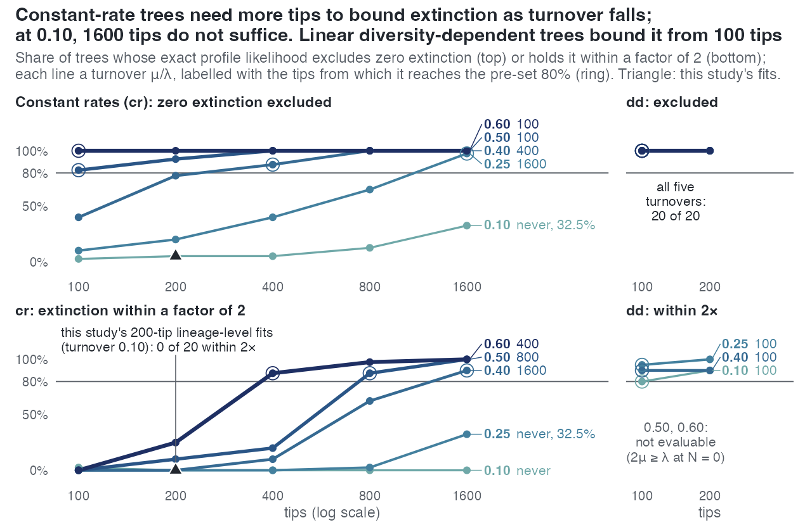

E38 — how much does a reconstructed tree tell about extinction? The exact profile likelihood by turnover and size
| Status | complete; cells.csv re-derived 2026-10-14 with the dd_ML sentinel treated as missing; holds for trees kept within 0.6-1.6 times the target size; the cr cells up to 800 tips at turnover up to 0.40 are superseded by E45 when it reports |
| Package build | emphasis f30a791 (emphasis is used only to simulate the cr trees) |
| Driver / analysis | sim/E38-profile.R; sim/E38-analysis.R |
| Data | results/E38/profile.csv (1200 rows, one per tree, no errors), results/E38/cells.csv (35 rows, one per model x size x turnover) |
Question
E29 to E35 found the extinction side not estimable at 200 tips and turnover 0.10 by every estimator, the exact one included (E32 (c), E34 (a)), and a first extinction slope returned at turnover 0.25 (E35 (a)). E38 maps where information on extinction appears, with an exact likelihood, so that the map is of the trees and not of MCEM.
Design
| setting | value |
|---|---|
| models | constant rates, DDD::bd_ML; linear diversity dependence, DDD::dd_ML (ddmodel = 1); both conditioned on survival of the crown (cond = 1) |
| profile | each tree fitted freely and with \(\mu\) fixed at 0 and at multiples of its generating value (0.25, 0.5, 1, 2, 4 for cr; 0.5, 1, 2 for dd), the other parameters re-optimised |
| turnover \(\varepsilon\) | 0.10, 0.25, 0.40, 0.50, 0.60 |
| sizes | cr 100, 200, 400, 800, 1600 tips, 40 trees a cell; dd 100 and 200 tips, 20 a cell |
cr trees |
emphasis's simulator, \(\lambda = \log(n/2)/15/(1-\varepsilon)\), \(\mu = \varepsilon\lambda\) |
dd trees |
DDD::dd_sim, K = n, \(\lambda_0 = 0.8/(1-\varepsilon)\), \(\mu = \varepsilon\lambda_0\) |
| crown age / \(\rho\) | 15 / 1 |
| tree filter | kept if 0.6 to 1.6 times the target tips |
\(\mathrm{LR}(m) = 2\,[\ell(\hat\theta) - \ell_p(m\,\mu_{\text{gen}})]\), with the free maximum taken as the best of the free fit and every profile point. The dd arm stops at 200 tips because dd_ML costs about 10 minutes a tree at 100 tips and grows with size.
Pre-set rule
Per model and cell:
- Detected if LR(0) > 3.84 on ≥ 80% of trees.
- Estimated within a factor of 2 if LR(0.5) > 3.84 and LR(2) > 3.84 on ≥ 80% of trees (the 95% profile interval inside \([\mu/2, 2\mu]\)).
- Coverage: LR(1) ≤ 3.84 on ≥ 90% of trees, else the profile is reported as miscalibrated in that cell.
- The result is the boundary: per turnover, the smallest size at which (1) holds and at which (2) holds; per size, the smallest turnover; the medians of LR(0) as the information gradient.
The lineage-level models have no exact likelihood and are not in E38; they are read against this map through E32 and E35.
Results
Constant rates (cells.csv, 40 trees a cell; "detect", "within 2x", "cover" are shares of trees):
| \(\varepsilon\) | tips | detect | within 2x | cover | median LR(0) | median \(\hat{\mu}\)/\(\mu\) |
|---|---|---|---|---|---|---|
| 0.10 | 100 / 200 / 400 / 800 / 1600 | 0.03 / 0.05 / 0.05 / 0.13 / 0.33 | 0.03 / 0 / 0 / 0 / 0 | 0.975 in every cell | 0.08 / 0.45 / 0.39 / 0.85 / 1.84 | 0.76 / 1.54 / 1.09 / 1.11 / 1.18 |
| 0.25 | same | 0.10 / 0.20 / 0.40 / 0.65 / 0.98 | 0 / 0 / 0 / 0.03 / 0.33 | 0.975-1.00 | 1.21 / 2.51 / 3.06 / 6.12 / 12.51 | 1.36 / 1.43 / 1.17 / 1.03 / 1.04 |
| 0.40 | same | 0.40 / 0.78 / 0.88 / 1.00 / 1.00 | 0 / 0 / 0.10 / 0.63 / 0.90 | 0.95-1.00 | 2.80 / 5.14 / 10.16 / 18.30 / 37.17 | 1.06 / 1.05 / 1.11 / 1.07 / 1.05 |
| 0.50 | same | 0.83 / 0.93 / 1.00 / 1.00 / 1.00 | 0 / 0.10 / 0.20 / 0.88 / 1.00 | 0.925-1.00 | 10.01 / 9.66 / 12.69 / 35.88 / 69.51 | 1.48 / 1.03 / 0.97 / 0.97 / 1.03 |
| 0.60 | same | 1.00 / 1.00 / 1.00 / 1.00 / 1.00 | 0 / 0.25 / 0.88 / 0.98 / 1.00 | 0.90-1.00 | 10.27 / 16.30 / 32.29 / 63.64 / 137.35 | 1.26 / 0.90 / 1.00 / 0.90 / 1.06 |
Bold: the first size at which the rule holds. At turnover 0.10 the free estimate is \(\hat{\mu}\) ≈ 0 (below \(10^{-4}\mu\)) on 33%, 23%, 30%, 10% and 10% of trees from 100 to 1600 tips; at 0.25 on 18% and 8% at 100 and 200 tips, and on none from 400. A cr fit takes 0.06 to 0.27 seconds a tree.
Diversity dependence (20 trees a cell):
| \(\varepsilon\) | tips | detect | within 2x | cover | median LR(0) | median \(\hat{\mu}\)/\(\mu\) | median seconds a tree |
|---|---|---|---|---|---|---|---|
| 0.10 | 100 / 200 | 1.00 / 1.00 | 0.80 / 0.90 | 1.00 / 0.95 | 21.0 / 37.7 | 0.99 / 0.95 | 336 / 1231 |
| 0.25 | 100 / 200 | 1.00 / 1.00 | 0.95 / 1.00 | 0.95 / 0.90 | 21.6 / 28.0 | 0.95 / 0.93 | 599 / 1793 |
| 0.40 | 100 / 200 | 1.00 / 1.00 | 0.90 / 0.90 | 0.95 / 0.90 | 26.4 / 39.3 | 0.94 / 0.95 | 832 / 2612 |
| 0.50 | 100 / 200 | 1.00 / 1.00 | not evaluable | 1.00 / 0.95 | 31.5 / 55.6 | 0.98 / 0.99 | 934 / 2188 |
| 0.60 | 100 / 200 | 1.00 / 1.00 | not evaluable | 1.00 / 0.95 | 45.0 / 87.0 | 1.06 / 0.96 | 1259 / 4397 |
At turnover 0.50 and 0.60 the profile point \(\mu\) = 2 \(\mu\)_gen lies at or above the speciation rate at N = 0 (\(2\mu_{\text{gen}} = \lambda_0 = 1.6\) at 0.50; \(2.4 > \lambda_0 = 2.0\) at 0.60), outside dd_ML's parameter space; dd_ML returns the sentinel -1 there on all 80 trees. The analysis now treats that value as missing, so detection and coverage are read normally and only the factor-of-2 test has no upper point.
The boundary (smallest size at which the rule holds):
| turnover | cr detected from |
cr within 2x from |
dd detected from |
dd within 2x from |
|---|---|---|---|---|
| 0.10 | never (33% at 1600) | never (0 at 1600) | 100 | 100 |
| 0.25 | 1600 | never (33% at 1600) | 100 | 100 |
| 0.40 | 400 | 1600 | 100 | 100 |
| 0.50 | 100 | 800 | 100 | not evaluable |
| 0.60 | 100 | 400 | 100 | not evaluable |
Every cell is calibrated (coverage 0.90 to 1.00).

dd panels reach 80% at 100 tips at every turnover where the test exists.Conclusion
The map, by the rule. Constant rates: extinction is detected on at least 80% of trees from 1600 tips at turnover 0.25, from 400 at 0.40 and from 100 at 0.50 and 0.60, and never up to 1600 tips at 0.10; it is estimated within a factor of 2 from 1600, 800 and 400 tips at 0.40, 0.50 and 0.60, and never at 0.10 or 0.25. Turnover moves the boundary more than size: at turnover 0.10, going from 200 to 400 tips moves the median LR(0) from 0.45 to 0.39; at 200 tips, going from turnover 0.10 to 0.25 moves it from 0.45 to 2.51. Diversity dependence: detected on every tree and estimated within a factor of 2 on 80% to 100% at 100 tips for turnover 0.10 to 0.40; at 0.50 and 0.60 detected on every tree with coverage 0.95 to 1.00, and the factor-of-2 test not evaluable. The supplement's reading of the dd result is that a clade at its carrying capacity has speciation equal to extinction at the present, so the recent part of the tree records extinction; E38 does not test that mechanism.
For the study: the trees of E29, E32 and E34 (200 tips, turnover 0.10) sit where the exact constant-rate likelihood detects extinction on 5% of trees and its median LR(0) is 0.45, which is what every estimator found on them. E35 (a)'s cell (200 tips, turnover 0.25) sits where detection is 20%. The map is for cr and dd only, at \(\rho\) = 1; the lineage-level models have no exact likelihood and are placed on it only by analogy. The "detected" rule is per tree; the size study (S), which reads a median over trees, reports extinction recovered in cr from 100 tips at turnover 0.40, where E38 detects it on 40% of trees: the two use different criteria.
Caveat: a tree was kept only if its size lay within 0.6 to 1.6 times the target, a condition no likelihood carries, so every detection and coverage rate above is that of trees in that window. E45, on trees conditioned on survival only, measures cr up to 800 tips at turnover 0.10-0.40 and replaces those cells when it reports.